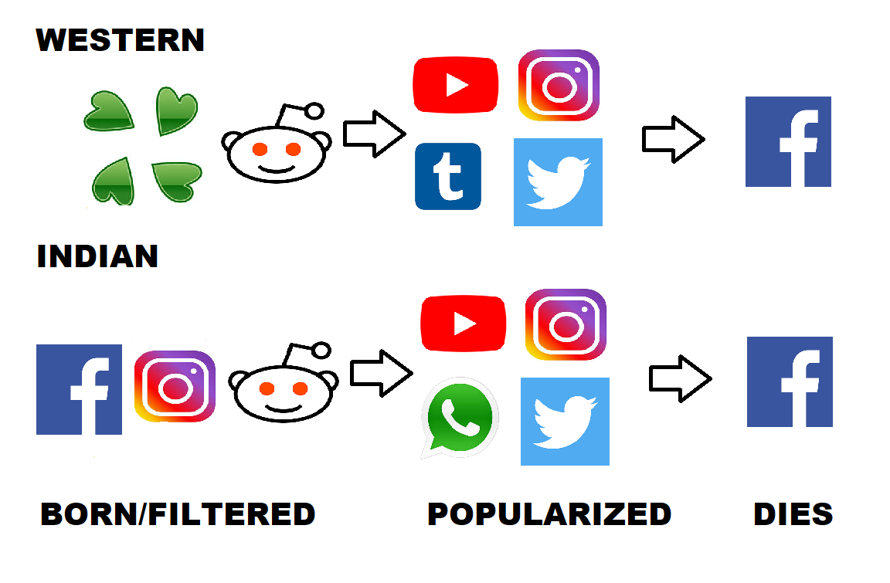
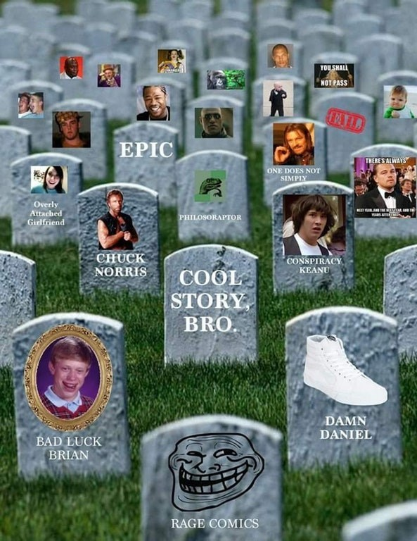
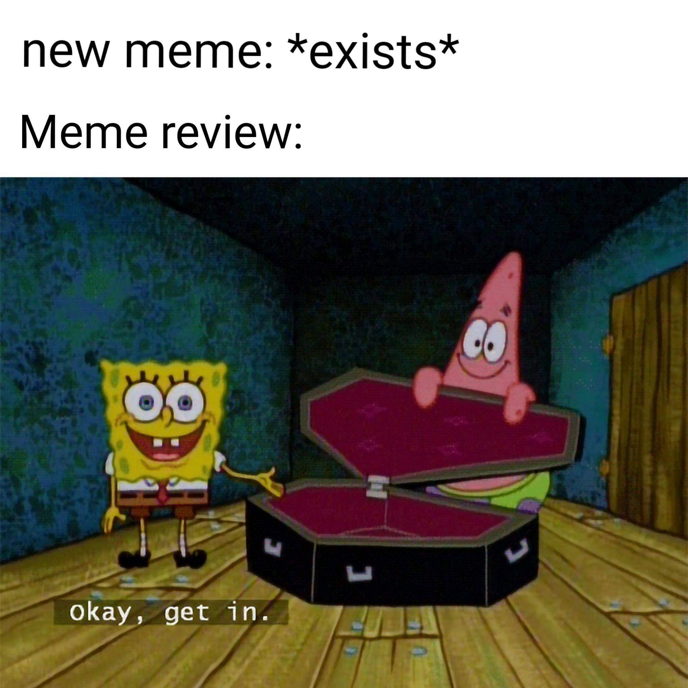
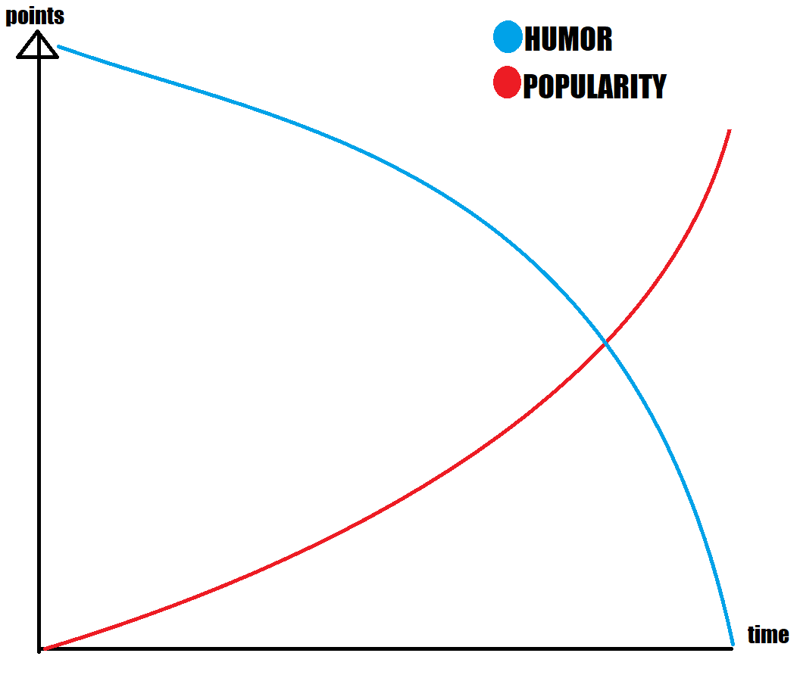

A meme is a cultural shorthand that, like all forms of communication, evolve with those who use them. Nobody can claim to know or understand every single meme that exists. They are simply too many and they can often be too personal to the individuals creating and sharing them. It is spread via the Internet, often through social media platforms. Traditionally, a prominent form of such memes consisted of image macros paired with a concept or catchphrase.
With the evolution of the internet, free tools to develop memes have made it easier than every for person to create their own memes. This has resulted in every niche group creating their own memes. Over the years, the internet has produced a large library of memes, to the point that there is probably a meme concerning every conceivable topic.
Life Cycle Of a Meme
Memes are like living creatures of sorts, they are created, popularized and like every other creature, die These memes follow different path through their life. To explain this lets classify them on the basis of region. Each country has events that attract the interest of different types of people and someone is bound to make a meme on that. The social media platforms a meme passes through depends on where it originated from and the target audience of that meme. American memes are usually first posted on sites like Reddit and 4chan. They are then popularized on Instagram, twitter and personal messaging apps, then they are circulated on Facebook for eternity. Indian memes on the other hand are broadly first posted on Reddit and Instagram, then popularized on more popular Instagram pages,twitter and WhatsApp, they too finally end up on Facebook where they are circulated forever. These are the paths most memes follow, there are exceptions with a few Facebook meme pages still making top notch content. Meme compilations on Youtube also play a big role in popularizing memes.
What is a dead meme?
A dead meme is one that is overused to the extent where it is no longer considered comic worthy to many. A Dead Meme does not have to be old. Often times a Dead Meme can be revived, if only self-referential, or satirical. If not, it can be considered quite annoying for a Dead Meme to be use. If you find yourself smirking at a dead meme, you need to up your meme game. Most of the memes
Where memes go to die
Facebook is the largest social media website in the world.It is the most accessed website in the world after Google and Youtube. Users 65 years and older are the fastest-growing group on Facebook. The Younger audience on the internet mainly use Instagram, Reddit, and YouTube for their memes. The huge audience combined with the older age demographic on Facebook means that memes are circulated for longer and not much original content is created. You need to look no further that the subreddit r/terriblefacebookmemes to understand the quality and pace at which memes are used on Facebook. Baby yoda and endgame memes are still wide spread on Facebook even though it has been more than 6 months since the baby yoda meme was popularized on Reddit and Instagram.
Average life span of a meme
As this new content ecosystem developed, it was accompanied by the widely accepted notion of Meme Acceleration. That is, the number of memes is constantly expanding, while their average lifespan grow shorter. Memes live and die at ever-accelerating rates. While this feels subjectively true, it remains largely hypothetical. A study on this by Joe Veix on the outline.com reveals that memes indeed are being created and dying at a rapid pace. The average lifespan of a meme has reduced from 4-5 months in the late 2000's to jut around 2 months as of 2018.

Conclusion
Memes are more than just images for people to laugh at and move on. They are an expression of the ideas and opinions of people.Some of our most beloved cultural objects are not only ephemeral but transmitted around the world at high speed before the close of business. Memes sprout from the ether (or so it seems). They charm and amuse us. They sicken and annoy us. They bore us. They linger for a while on Facebook and then they die.